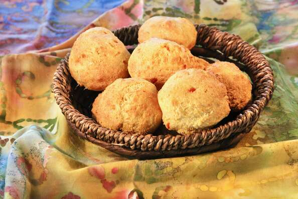

Air Fryer Hush Puppies

Description
Forget about deep frying, and give your hush puppies a light update using an air fryer. They're just a bit denser in texture than deep frying, and look for a subtle hint of heat. They're the perfect sidekick to fried fish or shrimp, but they're equally good with a drizzle of honey.
Ingredients
- Cooking Spray [nonfat]
- Yellow Cornmeal [1 cup]
- All-purpose Flour [3/4 cup]
- Baking Powder [1 tsp]
- Salt [1/2 tsp]
- Cayenne Pepper [1/4 tsp]
- Garlic Powder [1/4 tsp]
- Onion [2 tbsp, minced]
- Green Bell Pepper [2 tbsp, minced]
- Buttermilk [3/4 cup]
- Large Egg [1 pc]
Steps
- Preheat an air fryer to 390 degrees F (198 degrees C) according to manufacturer's instructions. Line the bottom of the air fryer basket with aluminum foil and spray with nonfat cooking spray.
- Stir cornmeal, flour, baking powder, salt, cayenne, and garlic powder together in a large bowl. Mix in onion and bell pepper.
- Whisk buttermilk and egg together in a separate bowl. Stir into cornmeal mixture. Let mixture rest for 5 minutes.
- Drop cornmeal mixture into the foil-lined basket using a 2-tablespoon cookie scoop, making sure not to have them touching each other. Coat with nonfat cooking spray.
- Cook in the preheated air fryer until golden brown, crispy, and cooked through, 9 to 10 minutes. Serve hot.
Reference